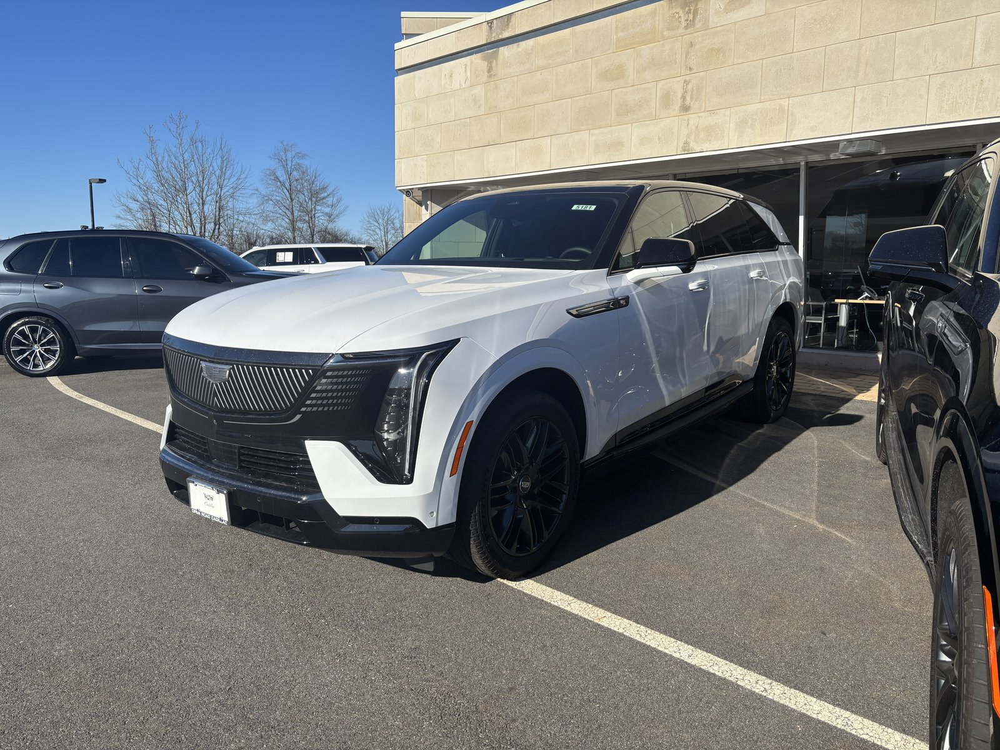
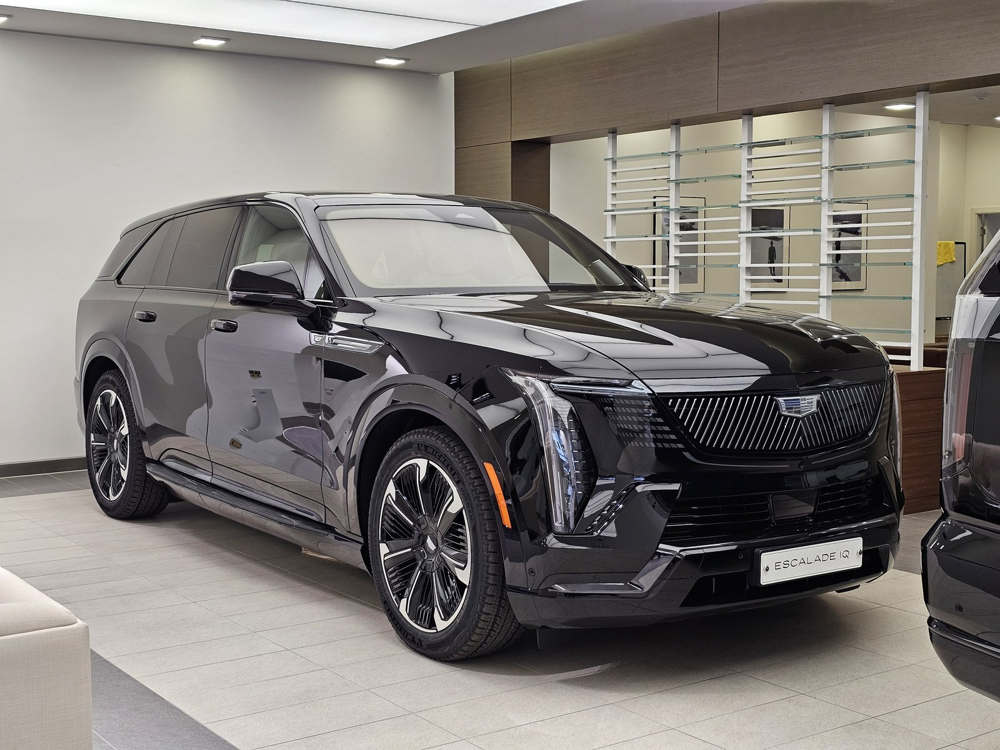
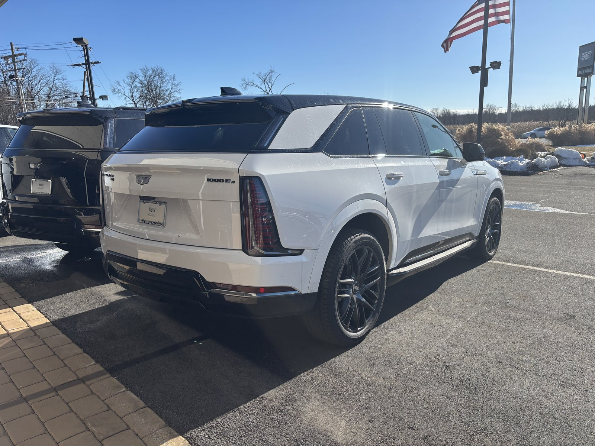
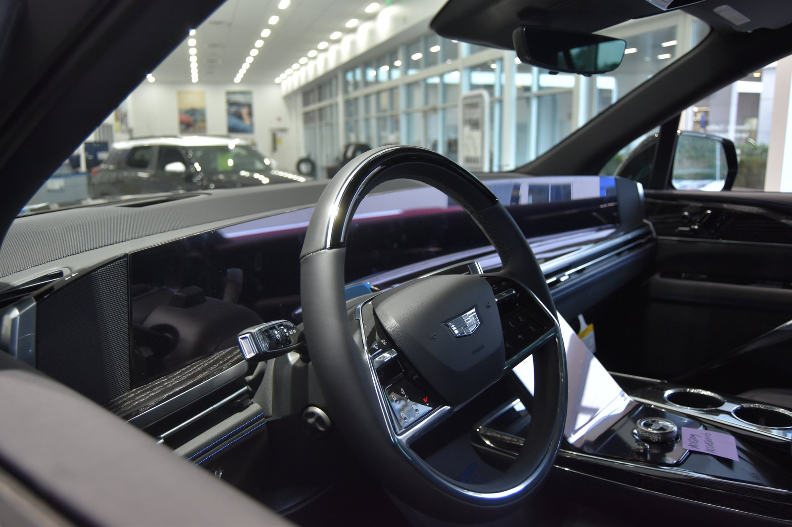

▲ 캐딜락 최초의 완전 전동화 플래그십 SUV, 에스컬레이드 IQ ⓒ 2000chevymontecarlo, Wikimedia Commons (Public Domain)
캐딜락의 대형 플래그십 SUV '에스컬레이드'가 완전 전동화 모델로 국내 시장에 자리를 잡아가고 있습니다. 숏바디 사양인 에스컬레이드 IQ가 먼저 국내 판매를 시작한 데 이어, 지난 5월 21일에는 3열 공간을 넉넉하게 키운 롱바디 사양 에스컬레이드 IQL까지 정식 출시되며 라인업을 완성했습니다.
내연기관 에스컬레이드의 존재감은 그대로 유지하면서 완전히 새로운 전동화 파워트레인과 최첨단 편의 사양을 갖춘 것이 특징입니다. 국내 가격과 제원은 물론, 먼저 출시된 북미 시장의 시승 리뷰까지 취합해 정리했습니다.
1. 국내 가격 & 라인업 — 숏바디 IQ에 롱바디 IQL 합류

▲ 국내 전시장에 놓인 에스컬레이드 IQ. 전장 5.7m에 달하는 압도적인 존재감을 자랑한다 ⓒ Damian B Oh, Wikimedia Commons (CC BY-SA 4.0)
국내 판매 가격은 에스컬레이드 IQ가 2억 7,757만 원부터, 4인치(약 10cm) 더 긴 롱바디 IQL이 2억 8,757만 원부터로 책정됐습니다. 두 모델 모두 다양한 옵션 구성 없이 최상위 사양을 담은 단일 '프리미엄 스포츠' 트림으로만 판매됩니다. 차체 크기는 전장 5,699mm, 전폭 2,060mm, 전고 1,949mm, 축간거리 3,460mm에 달해, 국내에 판매되는 SUV 중에서도 손꼽히는 압도적인 덩치를 자랑합니다.
특히 이번 에스컬레이드 IQ는 제너럴모터스(GM)가 국내에 판매하는 차량 중 최초로 '슈퍼크루즈' 반자율주행 기능을 지원한다는 점에서 상징적인 모델이기도 합니다. 지정된 고속도로 구간에서 손을 놓고도 주행이 가능한 슈퍼크루즈는 GM의 대표 운전자 보조 기술로, 이번 국내 출시를 계기로 처음 한국 소비자들도 경험할 수 있게 됐습니다.
2. 파워트레인 & 주행거리 — 750마력, 완충 시 710km

▲ '1000E4' 배지가 부착된 에스컬레이드 IQ 후면부. 듀얼모터 AWD를 기본 탑재한다 ⓒ 2000chevymontecarlo, Wikimedia Commons (Public Domain)
에스컬레이드 IQ는 205kWh급 대용량 얼티엄(Ultium) 배터리를 탑재해, 국내 인증 기준 1회 충전 시 최대 710km(IQL 기준)를 주행할 수 있습니다. 800V 아키텍처를 기반으로 한 초급속 충전 시스템을 지원해 최대 350kW급 충전이 가능하며, 미국 시장 기준으로는 약 10분 충전으로 117마일(약 188km)을 회복할 수 있는 수준입니다.
파워트레인은 듀얼모터 AWD 구성으로 최대 750마력을 발휘합니다. 미국 사양 기준 벨로시티 맥스(Velocity Max) 모드에서 정지 상태부터 시속 60마일(약 96km/h)까지 4.7초 만에 도달할 정도로, 4톤이 넘는 육중한 무게에도 불구하고 스포티한 가속력을 자랑합니다. 여기에 4륜 조향 시스템이 더해져 저속에서는 회전 반경을 줄여주고, 고속에서는 안정감과 견인 시 조향 성능을 함께 끌어올립니다.
3. 실내 & 편의 사양 — 55인치 커브드 디스플레이의 위용

▲ 필러부터 필러까지 이어지는 55인치 커브드 OLED 디스플레이가 인상적인 실내 ⓒ Wlb5V, Wikimedia Commons (CC BY-SA 4.0)
실내에서 가장 시선을 사로잡는 것은 필러부터 필러까지 이어지는 55인치 커브드 OLED 디스플레이입니다. 무선 스마트폰 미러링을 지원하며, 2열에는 마사지 기능과 업그레이드된 AKG 오디오 시스템을 갖춘 '이그제큐티브' 사양의 시트가 마련돼 있어 오너 드리븐은 물론 쇼퍼 드리븐 용도로도 손색이 없습니다.
앞서 언급한 슈퍼크루즈 반자율주행은 전 트림 기본 사양으로 제공됩니다. 2026년형부터는 기존 24인치에서 22인치 휠로 기본 사이즈를 낮췄는데, 이는 이전 모델에서 제기됐던 승차감 관련 지적을 반영한 조치로 풀이됩니다.
4. 해외 리뷰 종합 — "무게를 잘 숨긴 거대한 전기 SUV"
먼저 출시된 북미 시장에서는 에스컬레이드 IQ에 대해 대체로 호평이 이어지고 있습니다. 에어 스프링 서스펜션과 어댑티브 댐핑 시스템 덕분에 승차감이 매끄럽고 조용하다는 평가가 많으며, 일부 리뷰에서는 "이 정도로 정교한 시스템에 이만큼 큰 휠을 얹었다는 점을 고려하면 훌륭한 수준이지만, 완벽하지는 않다"며 노면 요철이 예상보다 더 전달된다는 세부적인 지적도 나왔습니다.
차량 무게는 4톤(약 9,000파운드)을 훌쩍 넘어 내연기관 에스컬레이드보다 약 50% 무겁지만, 듀얼모터 AWD와 에어서스펜션, 어댑티브 댐퍼가 이 무게감을 효과적으로 상쇄한다는 것이 중론입니다. 가속력과 주행거리, 승차감, 실내 마감, 편의 사양까지 대형 SUV로서는 이례적으로 균형 잡힌 완성도를 보여준다는 평가가 지배적입니다.
결국 에스컬레이드 IQ·IQL은 "가장 큰 전기 SUV가 가장 잘 만든 전기 SUV일 수도 있다"는 점을 보여주는 사례에 가깝습니다. 2억 원대 후반이라는 가격은 여전히 진입 장벽이 높지만, 압도적인 존재감과 최첨단 기술을 동시에 원하는 소비자에게는 국내에서 만날 수 있는 몇 안 되는 선택지입니다.